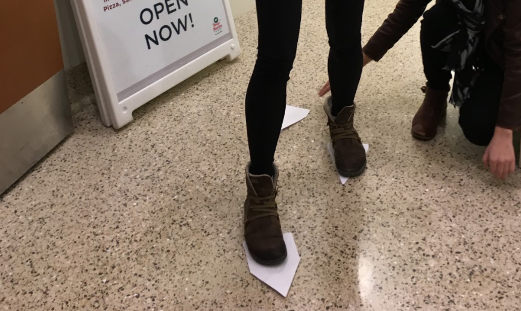
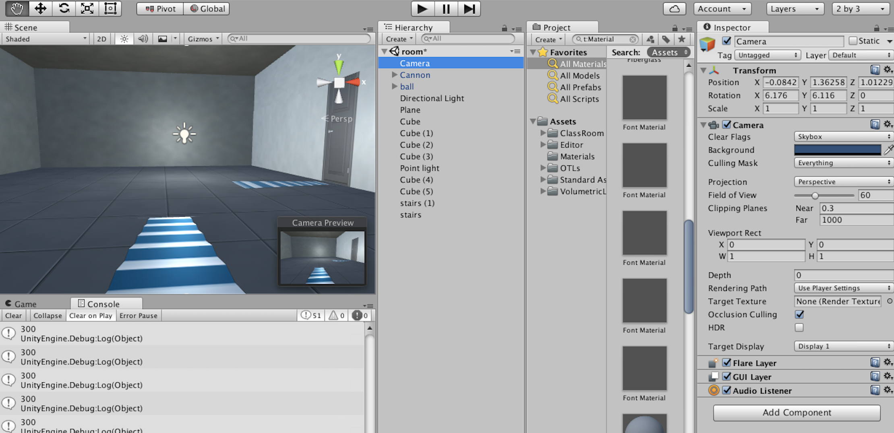

Paper prototyping
We used paper markers to prototype the ideal motion cues for three actions:
A staircase for walking, rotating footprints for turning,
and a flying baseball for grabbing objects. To enable turning, we
imagined an interaction that would guide users in their chosen
direction by displaying a guide of "stomping" footprints. With this method,
users could turn by maintaining continuous motion. We used this stage to work out
central usability questions as best we could without users with Parkinson's — questions such as
"What is a natural speed and direction of cues for turning?"

Through this prototyping exercise, we also realized that voice command would be a huge asset to trigger different illusions so that motion could be as seamless as possible.
AR prototyping
After the interactions had been mapped out with paper, we began
working on the AR and voice recognition capabilities. We chose to color the
staircase illusion blue in keeping with the research we had discovered about
its special steadying properties. We developed the
application for an Android phone and Google Cardboard, using a bit of
blue twine we had found to fashion a headstrap. 3D model assets
for the foot, ball, and stair illusions were found
and altered using the Unity Store and Blender.

In order for the app to lay out a projection along a path it was necessary to provide markers. We placed large arrows on visually busy yet consistent backgrounds for seamless pattern recognition. The incoming ball interaction, which was designed to allow users to target their arm extension so that they may pick up objects, could be summoned with the voice command "grab".